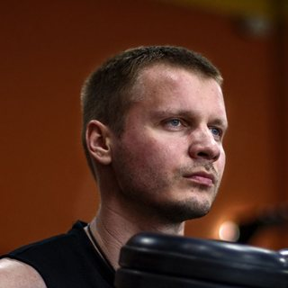

Мужской фокус
Строим V-образный атлетичный силуэт: мощные дельты и руки, развитые грудные и широчайшие. Формируем строгую осанку. Ноги и ягодицы — обязательная часть программы.
Результат: пропорциональное, сильное, красивое и мужественное тело.

FT online — методика тренера Александра ЕлисееваБот собирает тренировку под твой стаж, возраст, цель и травмы. К каждому упражнению — видео техники, подходы, отдых и комментарий тренера.
Без карты. Откроется Telegram — первая тренировка через пару минут.
Потом — от 997 ₽ в месяц. Дешевле одной тренировки с тренером.
Комментарий тренера
Fitness_trainer_onlineботпечатает…
Сегодня работаем грудь + трицепс. Главная задача — техника и контроль амплитуды. Вес рабочий, без рывков.
Сведения в тренажёре «бабочка»
15–20 повторений × 3 подхода
Отдых: 75–90 сек.
Скорее всего, на каждой тренировке в голове одни и те же вопросы:
Каждый раз что-то своё, и тренировки не складываются в программу.
Веса месяцами стоят на месте или растут рывками.
Со стороны вроде похоже, а куда уходит нагрузка — непонятно.
После перерыва или со старой травмой страшно нагружаться.
Дело не в лени. Просто рядом нет тренера, который ответит. FT online отвечает на эти вопросы в каждой тренировке.
«Правильно ли я делаю?»
На каждое упражнение — три слоя, как у настоящего тренера. Открыл между подходами, глянул — сделал.
Что важно именно сейчас: где работать мощно, где подконтрольно, на что обратить внимание. Комментарии продолжают друг друга, поэтому к одному и тому же упражнению в разных тренировках они разные.
30–60 секунд: Александр показывает, как сесть, куда вести локти и как держать корпус. Без лекций.
Подходы, повторы, отдых, дыхание, фокус, техника, частые ошибки и совет тренера — на одном экране.
Fitness_trainer_onlineбот
Сделай до упора, это твоё ключевое упражнение на грудь сегодня.
Сведения в тренажёре «бабочка»
15–20 повторений × 3 подхода
Отдых: 75–90 сек.
Дыхание: своди руки на выдохе, разводи на вдохе
Концентрация: грудь
Тренер: держи грудь раскрытой и веди движение мягко, без броска назад
Техника: руки чуть согнуты, локти приподняты, корпус стабилен
Частые ошибки: низкие локти, рывки корпусом, неправильная высота сиденья
«Это мой голос в твоём кармане»
«Что делать сегодня?»
Перед стартом бот задаст несколько вопросов — это около 2 минут. От ответов зависит, какие упражнения ты получишь и с какой нагрузкой.
«Не наврежу ли себе?»
Вот как я подстраиваю тренировки:
Уберу упражнения с высокой нагрузкой на эти зоны.
Учту зоны роста и не дам большой нагрузки на позвоночник.
Снижу общую нагрузку.
Оставлю только базовые, травмобезопасные упражнения.
Помогу выйти из застоя.
— Александр Елисеев
Бот подстраивается и дальше: ставь лайк упражнениям, которые зашли, и дизлайк тем, что не нравятся. Тренажёр занят или его нет — жми «Заменить» и получишь равнозначное упражнение.
FT online — тренировочный помощник, а не врач. Если болит прямо сейчас, сначала покажись специалисту.
Красивое, пропорциональное и сильное. У мужчин и женщин свои акценты.
Строим V-образный атлетичный силуэт: мощные дельты и руки, развитые грудные и широчайшие. Формируем строгую осанку. Ноги и ягодицы — обязательная часть программы.
Результат: пропорциональное, сильное, красивое и мужественное тело.
Акцент на развитые ягодицы, красивую линию бёдер и королевскую осанку. Рельефные женственные руки, узкая талия, упругая приподнятая грудь. Прорабатываем проблемные женские зоны.
Результат: подчёркнутая природная красота и женственность.
Основа — классические стили силового тренинга старой и новой школы. Бот сочетает их в правильных пропорциях и меняет упражнения, чтобы ты не застревал на месте.
«Какой вес брать?»
У каждого упражнения своя вилка повторений, например 8–12. Сделал больше 12 чисто — бот подскажет добавить вес, меньше 8 — снизить. Как подбирать рабочий вес, Александр объясняет в гиде по приложению.
В боте есть короткий гид: как есть на наборе и на жиросжигании, с примерами меню. Без голодовок и ощущения, что жизнь состоит из курицы и огурцов.
Ученики зовут его просто — Саня. В бот он собрал ту же логику, что на своих персональных тренировках: классика, чистая техника, пропорции и здравый смысл.

Мы не обещаем магию за неделю. Мы гарантируем порядок: каждая тренировка собрана по методике под твой профиль, без хаоса и случайных упражнений. А если ты всё делаешь по плану, а результат встал, — разбор с тренером входит в подписку.
Саня на связитренер, отвечает лично
Результат не двигается? Напиши — разберём, что поменять: в тренировках, технике или питании.
Имя, возрастновичок
Имя, возрастс опытом
Имя, возрастженщина
Без карты и автосписаний. За 10 дней сравнишь свои обычные тренировки с тренировками по методике — и решишь, продолжать ли.
Нажми кнопку — откроется бот в Telegram.
Ответь на вопросы профиля — около 2 минут.
Получи первую тренировку и иди в зал.
0 ₽
10 дней полного доступа, без карты.
1 290 ₽
Полный доступ.
Рекомендуем
2 990 ₽
вместо 3 870 ₽ при помесячной оплате. Выходит 997 ₽ в месяц.
За три месяца результат становится заметен.
Во всех тарифах — полный доступ: тренировки, гид по питанию и разбор с тренером. Тариф выбираешь прямо в боте.
Одна тренировка с персональным тренером стоит 1 500–3 000 ₽. Месяц FT online — дешевле одного такого занятия.
В Telegram, который у тебя уже есть. Отдельное приложение ставить не нужно.
Загрузи тренировку заранее, дома или там, где есть сеть. В зале всё будет под рукой и без связи: план, карточки, видео и комментарии тренера.
Да, бот рассчитан на зал. Если какого-то тренажёра нет или он занят, бот предложит равнозначную замену.
Да. Бот учтёт стаж и начнёт с базовых упражнений. Видео и комментарии тренера помогут поставить технику шаг за шагом.
Отметь ограничения в профиле, и бот уберёт упражнения с нагрузкой на эти зоны. При боли, диагнозах и восстановлении после травмы сначала согласуй нагрузку с врачом.
Нажми «Заменить»: бот подберёт равнозначное упражнение под твой профиль.
Обычно 45–75 минут. Зависит от программы, темпа и очередей на тренажёры.
Начни с одной тренировки, потом со следующей. План уже готов — остаётся прийти и сделать.
Если захочешь продолжить, выберешь тариф прямо в Telegram. Карту в демо ты не привязывал, поэтому ничего не спишется само.
Прямо в Telegram. Доступ откроется сразу.
Да. Если тренируешься по плану, а результат не двигается, напиши Сане: он разберёт причину и подскажет, что поменять. Персональное ведение 24/7 в подписку не входит.
Ответь на пару вопросов — и бот соберёт тренировку под твой уровень, цель и ограничения. Начни с 10 бесплатных дней и почувствуй разницу между «просто сходил в зал» и тренировкой по системе.
Без карты. Первая тренировка — через пару минут.